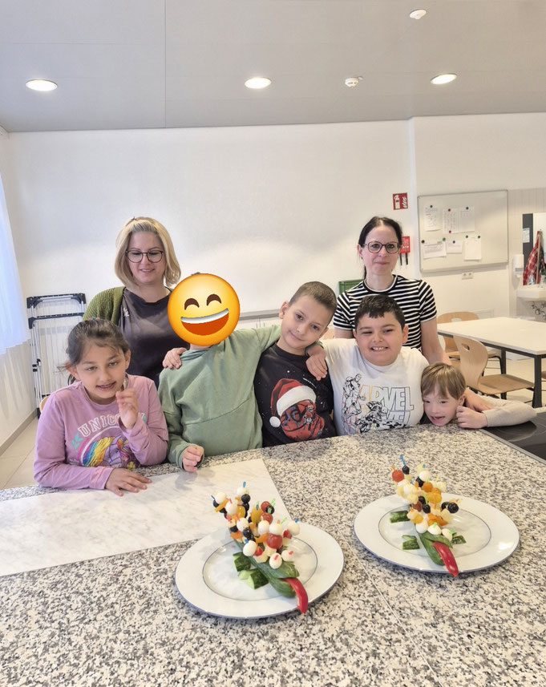
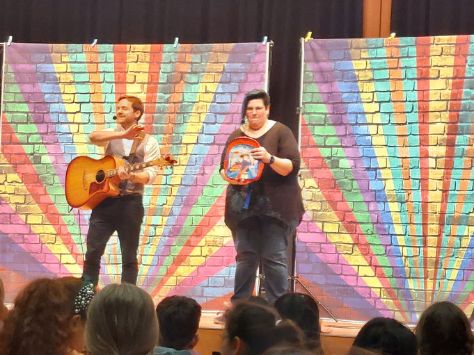
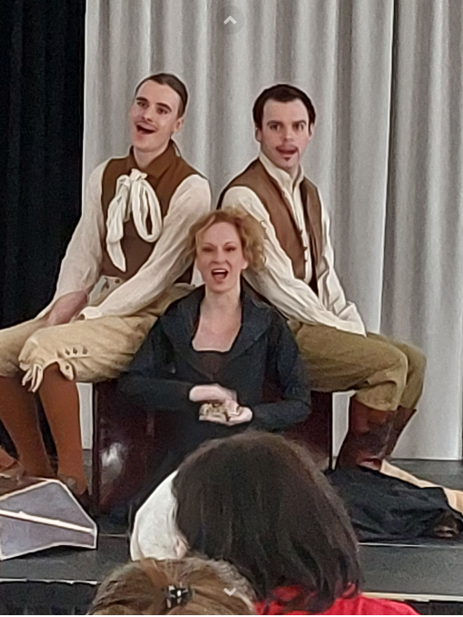
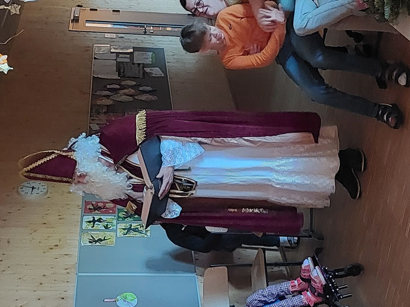

Ein neues Schuljahr beginnt!
September 2026
Ein neues Schuljahr liegt vor uns. Wir freuen uns sehr, auf neue und bekannte Gesichter! Allen Schülerinnen, Schülern und Lehrpersonen einen guten Start ins Schuljahr 2026/2027!
September 2026
Ein neues Schuljahr liegt vor uns. Wir freuen uns sehr, auf neue und bekannte Gesichter! Allen Schülerinnen, Schülern und Lehrpersonen einen guten Start ins Schuljahr 2026/2027!
Schnuppern jederzeit möglich
Du bist Sonderschullehrer oder Sonderschullehrerin mit einem großen Herzen und viel Freude am Tun? Besuch uns und überzeug dich von unserer positiven und respektvollen Atmosphäre! Die erfüllende Arbeit mit den Kindern in der ASO Mattighofen wächst dir sogleich ans Herz. Komm uns doch einmal zum Schnuppern besuchen!
Ostern 2026
Die Vorbereitungen für Ostern sind in vollem Gange!
Ostern 2026


Die Schülerinnen und Schüler des Poly Mattighofen haben uns zu einer Osterjause und lustigen Spielen eingeladen. Vielen Dank!
Schuljahr 2025/2026

Unsere Schülerinnen und Schüler haben lustige Krokodile als gesunden Snack vorbereitet.
Schuljahr 2025/2026


Das Mitmachkonzert hat alle begeistert! Unsere Schüler und Schülerinnen waren mit Freude und Begeisterung dabei. Vielen Dank für die Einladung!
Schuljahr 2025/2026


Ein Schauspielensemble hat uns einen spannenden Theatervormittag beschert. Unsere Schülerinnen und Schüler waren begeistert und haben die Vorstellung konzentriert und gespannt verfolgt.
Wir durften einen aufregenden Vormittag mit der Theateraufführung "Die Gebrüder Grimm erzählen: Brüderchen und Schwesterchen" erleben. Unsere Schülerinnen und Schüler waren mit Begeisterung dabei.
Vielen Dank an das Schauspielensemble unter der Leitung von Cassandra Rühmling und an die großzügige Spenderin Claudia Schwöllinger und den großzügigen Spender Franz Hintermaier, die uns gemeinsam diesen Theatergenuss ermöglichten.
Dezember 2025

Auch heuer wieder hat uns der Nikolaus in der ASO Mattighofen dank unserer lieben Schüler und Schülerinnen besucht. Wir wünschen allen schöne Ferien und fröhliche Weihnachten!
Schuljahr 2025/2026

Wir verabschieden uns von einer sehr engagierten, enorm erfahrenen und fähigen, höchst musikalischen, professionell unterrichtenden und vor allem ganz, ganz lieben Kollegin. Wir wünschen ihr alles Gute für den wohlverdienten Ruhestand. Vielen Dank für alles! Genieße den neuen Lebensabschnitt, liebe Christine!
September 2025
Wir begrüßen alle Schülerinnen, Schüler und Lehrkräfte im neuen Schuljahr! Die Schule wächst, denn heuer besuchen 38 Kinder unsere Schule und wir dürfen zwei neue Lehrkräfte begrüßen! Wir freuen uns auf ein ereignisreiches, spannendes Schuljahr!
Schuljahr 2024/2025

Unsere Vernissage am 23. Mai 2025 war ein voller Erfolg! Mit der Live-Musik "Trio Royal" und leckerem Fingerfood und Getränken haben wir unsere zahlreichen Gäste begrüßen dürfen.
Schuljahr 2024/2025

Die liebevoll gestaltete fairtraide Schokolade ist bei uns jetzt erhältlich! Unsere Schüler und Schülerinnen durften gemeinsam die Verpackung dieser leckeren Vollmilch-Schokolade entwerfen.